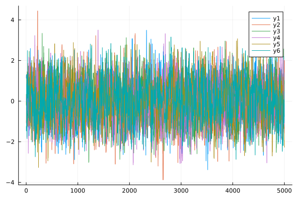

Customizing your sampler
This document describes how to extend DifferentialEvolutionMetropolis.jl with your own custom components. You can define custom stopping criteria, diagnostic checks, and proposal distributions (updates).
Custom Stopping Criteria
To create a custom stopping criterion, you need to define a function that follows the AbstractMCMC interface, similar to r̂_stopping_criteria which is available if MCMCDiagnosticTools.jl is loaded. The function will be called during sampling to determine when to stop. See the AbstractMCMC documentation for details.
The stopping criterion function has the following signature:
function your_stopping_criteria(
rng::AbstractRNG,
model::AbstractMCMC.AbstractModel,
sampler::DifferentialEvolutionMetropolis.AbstractDEMMetaSampler,
samples::Vector{<:DifferentialEvolutionMetropolis.DEMSample},
state::DifferentialEvolutionMetropolis.DEMState,
iteration::Int;
kwargs...
)rng: Random number generator (required by AbstractMCMC interface, usually unused)model: The model being sampled (required by interface, usually unused)sampler: The differential evolution sampler (required by interface, usually unused)samples: Vector of all collected samples from all chainsstate: Current sampler state (required by interface, usually unused)iteration: Current iteration numberkwargs...: Additional keyword arguments passed viaAbstractMCMC.sample
The function should return true if sampling should stop, and false otherwise.
Here is an example of a very simple stopping criterion that stops sampling after a maximum number of iterations has been reached:
using DifferentialEvolutionMetropolis, AbstractMCMC, Random
function max_iterations_stopping(
rng::AbstractRNG,
model::AbstractMCMC.AbstractModel,
sampler::DifferentialEvolutionMetropolis.AbstractDEMMetaSampler,
samples::Vector{<:DifferentialEvolutionMetropolis.DEMSample},
state::DifferentialEvolutionMetropolis.DEMState,
iteration::Int;
max_iterations::Int = 10000,
kwargs...
)
if iteration >= max_iterations
println("Reached maximum iterations ($max_iterations), stopping.")
return true
end
return false
end
# Usage with AbstractMCMC.sample
using LogDensityProblems
model = LogDensityModel(your_log_density)
sampler = setup_de_update()
rng = Random.default_rng()
result = sample(
rng,
model,
sampler,
max_iterations_stopping;
max_iterations = 5000, # passed as keyword argument
n_chains = 4
)Custom Proposal Distributions
Define a custom update by subtyping DifferentialEvolutionMetropolis.AbstractDEMSampler{<:AbstractDEMSamplerExecutionMode, <:AbstractDEMSamplerTryMode} and implementing DifferentialEvolutionMetropolis.proposal!. The two type parameters declare the update's capabilities.
AbstractDEMSamplerExecutionMode indicates if an update supports multi-threading (DEMSamplerMultiThread), by default all update, even those marked as DEMSamplerSerial support multithreaded across log-density evaluations when memory = true, execution mode refers to multithreading when memory = false. As a rule of thumb, any update that uses other chains in the ensemble should be marked DEMSamplerSerial if it uses other chains positions (i.e. pick_chains) and marked DEMSamplerMultiThread if it only uses it own position.
AbstractDEMSamplerTryMode indicates if the updates supports multi-try evaluation, not if it actually uses it. Any update implemented via the proposal! interface that are symmetrical should be labelled with DEMSamplerMultipleTry, otherwise DEMSamplerSingleTry.
The method signature for the proposal is:
function proposal!(
xₚ::V,
x::V,
state::DifferentialEvolutionMetropolis.DEMState,
sampler::YourSampler,
current_state::Int
) where {V <: AbstractVector}xₚ: The vector to write the proposed position intox: The position to propose fromstate: The current state containing all chain positions, log-densities, and chain specific rngssampler: An instance of your custom sampler structcurrent_state: The index of the chain to be updated
The function should write the proposed position into xₚ (proposing from x) and return a named tuple with at least (offset = hastings_correction,) where:
offset: Hastings ratio correction in log-space (typically 0.0 for symmetric proposals)
Chains Required for Memoryless Sampling
When memoryless sampling is used (memory = false), the sampler validates that the number of parallel chains is sufficient for the sampler's proposals (since they cannot be drawn from the memory database). By default, custom updates subtyping DifferentialEvolutionMetropolis.AbstractDEMSampler require at least 3 chains. If your custom sampler has a different requirement, you should implement the chains_required(sampler) trait function. For example:
# If your sampler only needs 1 chain (e.g., standard random walk):
DifferentialEvolutionMetropolis.chains_required(::YourSampler) = 1Here is an example of a simple Metropolis-Hastings random walk update with a fixed step size:
using DifferentialEvolutionMetropolis, Distributions, Random
# Define the struct for the sampler
struct MetropolisHastingsUpdate <: DifferentialEvolutionMetropolis.AbstractDEMSampler{
DifferentialEvolutionMetropolis.DEMSamplerMultiThread,
DifferentialEvolutionMetropolis.DEMSamplerMultipleTry,
}
proposal_distribution::MvNormal
end
# Implement the proposal function
function DifferentialEvolutionMetropolis.proposal!(
xₚ::V,
x::V,
state::DifferentialEvolutionMetropolis.DEMState,
sampler::MetropolisHastingsUpdate,
current_state::Int
) where {V <: AbstractVector}
# Propose a new point using a random walk
xₚ .= x .+ rand(state.rngs[current_state], sampler.proposal_distribution)
# The proposal is symmetric, so no Hastings correction needed
return (offset = 0.0,)
end
DifferentialEvolutionMetropolis.chains_required(::MetropolisHastingsUpdate) = 1Avoiding Allocations with Scratch Buffers
The example above allocates a new vector for every proposal. This is usually negligible next to the cost of the log density, so it is the recommended starting point. To avoid allocations, an update can hold a DEMProposalScratch{N}, which gives each chain N preallocated vectors of the positions' element type the length of the parameter vector. The buffers are sized by prepare_scratch! before chains are updated, and only reallocated when the element type, number of chains or parameters changes. Only use the buffers belonging to current_state, as chains may be updated in parallel.
struct ScratchMetropolisHastingsUpdate{D <: MvNormal} <: DifferentialEvolutionMetropolis.AbstractDEMSampler{
DifferentialEvolutionMetropolis.DEMSamplerMultiThread,
DifferentialEvolutionMetropolis.DEMSamplerMultipleTry,
}
proposal_distribution::D
scratch::DifferentialEvolutionMetropolis.DEMProposalScratch{1}
end
function ScratchMetropolisHastingsUpdate(proposal_distribution::MvNormal)
return ScratchMetropolisHastingsUpdate(proposal_distribution, DifferentialEvolutionMetropolis.DEMProposalScratch{1}())
end
# Size the buffers before each step
function DifferentialEvolutionMetropolis.prepare_scratch!(sampler::ScratchMetropolisHastingsUpdate, state)
return DifferentialEvolutionMetropolis.prepare_scratch!(sampler.scratch, state)
end
function DifferentialEvolutionMetropolis.proposal!(
xₚ::V,
x::V,
state::DifferentialEvolutionMetropolis.DEMState,
sampler::ScratchMetropolisHastingsUpdate,
current_state::Int
) where {V <: AbstractVector}
# Draw the random walk step into this chain's buffer rather than a new vector
# We pass the type of the state (here Float64) to make `chain_buffers` type stable
# `scratch` itself if a mutable struct that can hold vectors of any type, allowing seem-less reuse of buffers
# across logdensities of different dimensions and types
(jump,) = DifferentialEvolutionMetropolis.chain_buffers(sampler.scratch, eltype(x), current_state)
rand!(state.rngs[current_state], sampler.proposal_distribution, jump)
xₚ .= x .+ jump
return (offset = 0.0,)
end
DifferentialEvolutionMetropolis.chains_required(::ScratchMetropolisHastingsUpdate) = 1Adaptive Proposals with step_warmup
For proposals that require adaptation during warm-up, you need to implement the step_warmup as well. This is called during the warm-up phase.
You'll also need to define adaptive state structures and methods. Here's an example of an adaptive Metropolis-Hastings sampler:
using AbstractMCMC, DifferentialEvolutionMetropolis, LinearAlgebra, Statistics, LogDensityProblems
import AbstractMCMC: step, step_warmup
# Define adaptive state
mutable struct AdaptiveMetropolisState{T<:Real} <:DifferentialEvolutionMetropolis.AbstractDEMAdaptiveState{T}
proposal_cov::Matrix{T}
adaptation_count::Int
running_mean::Vector{T}
running_cov::Matrix{T}
end
# Define the adaptive sampler
struct AdaptiveMetropolisUpdate{T<:Real} <: DifferentialEvolutionMetropolis.AbstractDEMSampler{
DifferentialEvolutionMetropolis.DEMSamplerMultiThread,
DifferentialEvolutionMetropolis.DEMSamplerMultipleTry,
}
initial_cov::Matrix{T}
adapt_after::Int
adapt_every::Int
adapt_scale::T
end
# Constructor
function AdaptiveMetropolisUpdate(
n_params::Int;
initial_std::Float64 = 0.1,
adapt_after::Int = 200,
adapt_every::Int = 100,
adapt_scale::Float64 = 2.38^2
)
initial_cov = (initial_std^2) * I(n_params)
return AdaptiveMetropolisUpdate{Float64}(initial_cov, adapt_after, adapt_every, adapt_scale / n_params)
end
# Initialize adaptive state
function DifferentialEvolutionMetropolis.initialize_adaptive_state(sampler::AdaptiveMetropolisUpdate, model_wrapper::AbstractMCMC.LogDensityModel, n_chains::Int, ::Type{T}) where {T<:Real}
n_params = LogDensityProblems.dimension(model_wrapper.logdensity)
return AdaptiveMetropolisState{T}(
Matrix{T}(sampler.initial_cov),
0,
zeros(T, n_params),
Matrix{T}(sampler.initial_cov)
)
end
# Fix sampler (convert adaptive to non-adaptive)
function DifferentialEvolutionMetropolis.fix_sampler(sampler::AdaptiveMetropolisUpdate{T}, adaptive_state::AdaptiveMetropolisState{T}) where {T}
return MetropolisHastingsUpdate(MvNormal(zeros(T, size(adaptive_state.proposal_cov, 1)), adaptive_state.proposal_cov))
end
# Proposal method (same as non-adaptive)
function DifferentialEvolutionMetropolis.proposal!(
xₚ::V,
x::V,
state::DifferentialEvolutionMetropolis.DEMState,
sampler::AdaptiveMetropolisUpdate,
current_state::Int
) where {V <: AbstractVector}
# Use current proposal covariance from adaptive state
xₚ .= rand(state.rngs[current_state], MvNormal(x, state.adaptive_state.proposal_cov))
return (offset = 0.0,)
end
DifferentialEvolutionMetropolis.chains_required(::AdaptiveMetropolisUpdate) = 1
# Adaptive step during warm-up
function step_warmup(
rng::AbstractRNG,
model_wrapper::AbstractMCMC.LogDensityModel,
sampler::AdaptiveMetropolisUpdate{T},
state::DifferentialEvolutionMetropolis.DEMState{T, <:AdaptiveMetropolisState{T}};
parallel::Bool = false,
kwargs...
) where {T<:Real}
# Perform regular step
sample, new_state = step(rng, model_wrapper, sampler, state; parallel = parallel, kwargs...)
# Update adaptive parameters in-place
adapt_state = new_state.adaptive_state
adapt_state.adaptation_count += 1
# Only adapt after burn-in period and at specified intervals
if adapt_state.adaptation_count > sampler.adapt_after && adapt_state.adaptation_count % sampler.adapt_every == 0
# Compute empirical covariance from current chain positions
positions = reduce(hcat, new_state.x)' # Convert to matrix
empirical_cov = cov(positions)
# Update proposal covariance with regularization in-place
adapt_state.proposal_cov .= sampler.adapt_scale * empirical_cov + 1e-6 * I(size(empirical_cov, 1))
end
return sample, new_state
endstep_warmup (generic function with 5 methods)Example: Using Custom Components
Here is a complete example that shows how to use custom components with the new AbstractMCMC interface:
using Distributions, TransformedLogDensities, LinearAlgebra, TransformVariables, Plots
# Set up a simple log-density to sample from (a 2D standard normal distribution)
ld = TransformedLogDensity(as(Array, 2), x -> -sum(x.^2) / 2)
dimension(ld) = 2
model = AbstractMCMC.LogDensityModel(ld)
# Create custom samplers
simple_mh = MetropolisHastingsUpdate(MvNormal([0.0, 0.0], 0.1 * I))
adaptive_mh = AdaptiveMetropolisUpdate(2; initial_std = 0.1)
# Create a composite sampler scheme
my_sampler_scheme = setup_sampler_scheme(
simple_mh,
adaptive_mh;
w = [0.3, 0.7] # Use adaptive sampler 70% of the time
)
# Sample using AbstractMCMC.sample
result = sample(
Random.default_rng(),
model,
my_sampler_scheme,
5000;
n_chains = 6,
num_warmup = 10000, #adaptive steps
memory = true,
parallel = false,
chain_type = DEMOutput
)
plot(result.samples[:, :, 1])
plot(result.samples[:, :, 2])
Custom Sampler API
These functions and types are not exported, so access them with the DifferentialEvolutionMetropolis. prefix.
Warning: the custom sampler API may receive breaking changes in minor version updates.
See also DifferentialEvolutionMetropolis.step and DifferentialEvolutionMetropolis.step_warmup.
Defining your own sampler
Types
DifferentialEvolutionMetropolis.AbstractDEMSampler — Type
AbstractDEMSampler{E <: AbstractDEMSamplerExecutionMode, T <: AbstractDEMSamplerTryMode}Supertype of a single update. A struct inheriting from this type and implementing DifferentialEvolutionMetropolis.proposal!, will function as an update in this package.
DifferentialEvolutionMetropolis.AbstractDEMSamplerExecutionMode — Type
AbstractDEMSamplerExecutionModeSupertype indicating the execution mode of an DifferentialEvolutionMetropolis.AbstractDEMSampler, declaring whether chains can update in parallel with multithreading.
DifferentialEvolutionMetropolis.DEMSamplerSerial — Type
DEMSamplerSerialExecution mode of an update whose proposals read other chains, so without memory the chains must update in turn (unless multiple tries are used).
DifferentialEvolutionMetropolis.DEMSamplerMultiThread — Type
DEMSamplerMultiThreadExecution mode of an update whose chains can update in parallel, even without memory.
DifferentialEvolutionMetropolis.AbstractDEMSamplerTryMode — Type
AbstractDEMSamplerTryModeSupertype indicating if an DifferentialEvolutionMetropolis.AbstractDEMSampler, supports multiple tries.
DifferentialEvolutionMetropolis.DEMSamplerSingleTry — Type
DEMSamplerSingleTryDoes not support multiple tries.
DifferentialEvolutionMetropolis.DEMSamplerMultipleTry — Type
DEMSamplerMultipleTryTry mode of an update that supports n_tries > 1, which requires a symmetric proposal with zero Hastings correction.
Methods to define
DifferentialEvolutionMetropolis.proposal! — Function
proposal!(xₚ, x, state::DEMState, sampler::AbstractDEMSampler, current_state::Int)Write a proposal for chain current_state, made from position x, into xₚ.
Every update must implement this. Use state.rngs[current_state] for random draws, as chains may be updated in parallel.
Returns
- A named tuple with at least
offset, the log Hastings correction (0.0for a symmetric proposal,-Infto reject the proposal).
DifferentialEvolutionMetropolis.chains_required — Function
chains_required(sampler::AbstractDEMMetaSampler)Minimum number of chains sampler needs when sampling without memory.
Define a method for a custom update that needs a different number, e.g. chains_required(::MyUpdate) = 1 for a random walk.
DifferentialEvolutionMetropolis.prepare_scratch! — Function
prepare_scratch!(sampler::AbstractDEMMetaSampler, state)
prepare_scratch!(scratch::DEMProposalScratch, state)Size the scratch buffers of sampler for state, called before each step's chain updates since proposals may run in parallel and cannot resize safely.
The fallback does nothing. An update holding a DifferentialEvolutionMetropolis.DEMProposalScratch should define a method that calls the DEMProposalScratch method on it.
For adaptive samplers
DifferentialEvolutionMetropolis.AbstractDEMAdaptiveState — Type
AbstractDEMAdaptiveState{T}Supertype of the adaptive state of a sampler, held in DifferentialEvolutionMetropolis.DEMState, with T the position element type.
DifferentialEvolutionMetropolis.initialize_adaptive_state — Function
initialize_adaptive_state(sampler::AbstractDEMMetaSampler, model_wrapper::LogDensityModel, n_chains::Int, ::Type{T})Create the adaptive state of sampler at the start of sampling, with T the position element type.
The fallback returns a static (non-adaptive) state. An adaptive update defines a method returning its own DifferentialEvolutionMetropolis.AbstractDEMAdaptiveState, along with methods for step_warmup and DifferentialEvolutionMetropolis.fix_sampler.
DifferentialEvolutionMetropolis.fix_sampler — Function
fix_sampler(sampler::AbstractDEMMetaSampler, adaptive_state::AbstractDEMAdaptiveState)Fix adaptive parameters of a sampler to their current adapted values.
For non-adaptive samplers, returns the sampler unchanged. For adaptive samplers, returns a new sampler with the adaptive parameters fixed to their current values in the adaptive_state. A custom adaptive update should define a method for its adaptive state.
Arguments
sampler: The differential evolution sampler to fixadaptive_state: The adaptive state containing current parameter values
Returns
- A sampler with fixed (non-adaptive) parameters
Example
using DifferentialEvolutionMetropolis, Random, Distributions
# This function is typically used after warmup/adaptation phase
# fixed_sampler = DifferentialEvolutionMetropolis.fix_sampler(adaptive_sampler, state.adaptive_state)See also fix_sampler_state.
Other internals for reference
Types
DifferentialEvolutionMetropolis.AbstractDEMMetaSampler — Type
AbstractDEMMetaSamplerSupertype of every update and sampler scheme in the package. Includes both actual updates DifferentialEvolutionMetropolis.AbstractDEMSampler and composite schemes.
DifferentialEvolutionMetropolis.DEMState — Type
DEMStateState of all chains, passed between steps and to DifferentialEvolutionMetropolis.proposal!.
Fields a custom update may read:
x: current position of each chain.ld: log density at each current position.rngs: per-chain random number generators.adaptive_state: theDifferentialEvolutionMetropolis.AbstractDEMAdaptiveStateof the sampler.
Draw other chains or memory positions with DifferentialEvolutionMetropolis.pick_chains. The remaining fields are preallocated buffers and should not be modified.
DifferentialEvolutionMetropolis.DEMSample — Type
DEMSampleSample returned by each step, with fields x (position of each output chain) and ld (log density at each position).
Hot chains are excluded when parallel tempering is used.
DifferentialEvolutionMetropolis.DEMProposalScratch — Type
DEMProposalScratch{N}()Per-chain proposal buffers held by an update: N vectors per chain, with the element type and length of the positions.
The buffers are sized by DifferentialEvolutionMetropolis.prepare_scratch! and only reallocated when the element type, number of chains or dimensions changes. Access them with DifferentialEvolutionMetropolis.chain_buffers.
Functions
DifferentialEvolutionMetropolis.pick_chains — Function
pick_chains(state::DEMState, current_chain::Int, ::Val{N})Return a tuple of N distinct positions, drawn without replacement using state.rngs[current_chain].
Without memory these are other live chains, excluding current_chain; with memory they are drawn from the memory archive. If N exceeds n_preallocated_indices (default 3, see deMC) the index buffers are resized with a warning.
DifferentialEvolutionMetropolis.fix_sampler_state — Function
fix_sampler_state(sampler::AbstractDEMMetaSampler, state::DEMState)Fix adaptive sampler parameters and return a corresponding non-adaptive state.
Takes an adaptive sampler and state, fixes the sampler's adaptive parameters to their current values, and returns both the fixed sampler and a simplified state without adaptive components. Adaptive updates inside sampler schemes are fixed as well.
Arguments
sampler: The differential evolution sampler (potentially adaptive)state: The current sampler state (DEMState)
Returns
fixed_sampler: Sampler with adaptive parameters fixed to current valuesfixed_state: State without adaptive components
Example
using DifferentialEvolutionMetropolis, Random, Distributions
# This function is typically used after warmup/adaptation phase
# fixed_sampler, fixed_state = DifferentialEvolutionMetropolis.fix_sampler_state(sampler, state)See also fix_sampler.
DifferentialEvolutionMetropolis.chain_buffers — Function
chain_buffers(scratch::DEMProposalScratch{N}, ::Type{T}, i::Int)Return the N buffers of chain i as a tuple of Vector{T}.
T must be the element type the scratch was last prepared for, i.e. eltype(x) inside DifferentialEvolutionMetropolis.proposal!.